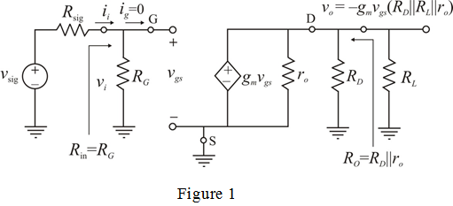

Apply voltage division rule to the left side loop in the circuit.
The expression for the output voltage from the circuit is,
Substitute the expression for  in the equation for
in the equation for  .
.
Define gain,  .
.
Substitute for
for  in the equation.
in the equation.
Draw the equivalent circuit of the common-source amplifier for small-signal analysis.

Apply voltage division rule to the left side loop in the circuit.
The expression for the output voltage from the circuit is,
Substitute the expression for in the equation for .
Define gain, .
Substitute for in the equation.
Substitute 2 mA/V for the trans-conductance,  ,
,  for output resistance,
for output resistance,  ,
,  for drain resistance,
for drain resistance,  , got gate resistance,
, got gate resistance,  ,
,  for Thevenin’s resistance of signal source,
for Thevenin’s resistance of signal source,  , and
, and  for load resistance,
for load resistance,  .
.
Thus, the overall gain of the amplifier,  is, .
is, .